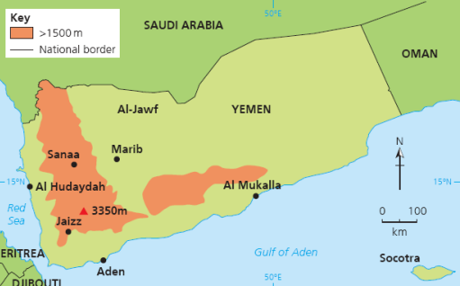
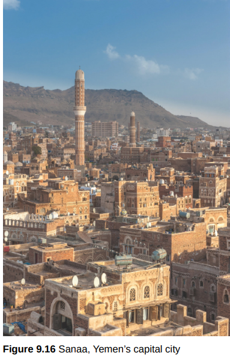
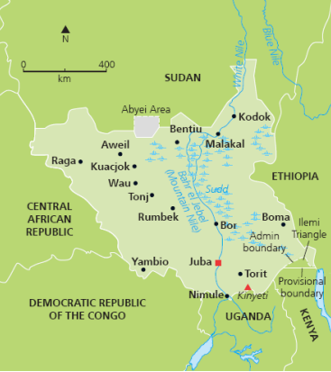
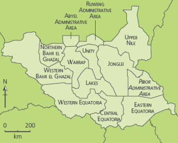
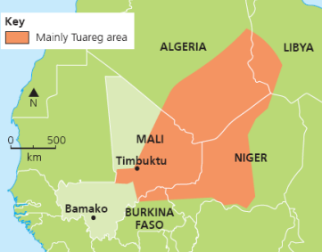
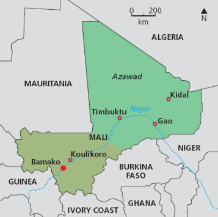
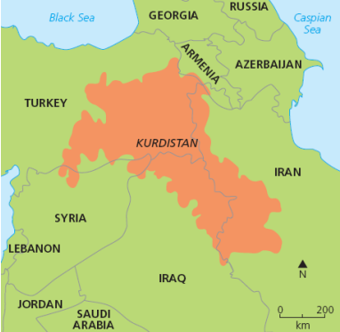
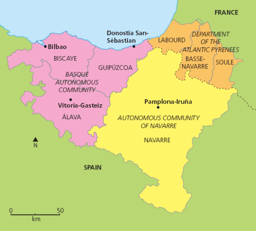

Power and Borders Case Studies
Sovereignty, territorial integrity, conflict and global governance
Yemen
Sovereignty challenged by Houthis, Saudi-led intervention, southern separatism and terrorist activity.
South Sudan
New state affected by civil war, ethnic rivalry, poor governance, displacement and international intervention.
Mali
Territorial integrity challenged by Tuareg separatism, Azawad claims, terrorism and porous borders.
Basque Country
A nation straddling France and Spain with long-running demands for self-determination.
Kashmir
Contested territory where India and Pakistan dispute sovereignty, security and water resources.
East Timor and Kurdistan
East Timor shows successful independence; Kurdistan shows a nation without a sovereign state.

Yemen sits beside Saudi Arabia, Oman, the Red Sea and Gulf of Aden, with strategic ports including Aden and Al Hudaydah.

Sanaa became central to the challenge after Houthi rebels seized control of the capital.
- Houthi control: the Houthi movement removed the internationally recognised government from much of the north and west, including Sanaa.
- Saudi-led intervention: air strikes began in 2015 to restore the recognised government, but the legality and civilian impacts are contested.
- Southern separatism: anti-Houthi groups have sought independence for South Yemen, threatening territorial integrity.
- Terrorism: Al Qaeda and Islamic State activity has grown in the instability of civil war.
| People | Places |
|---|---|
| 17,700 civilians killed or injured; over 22 million need humanitarian assistance or protection; 20 million are food insecure. | Air strikes damaged residential areas, markets, schools, mosques, roads and airports in and around Sanaa. |
| Severe acute malnutrition affects children and pregnant or breastfeeding women; health care, safe water and sanitation are restricted. | Al Hudaydah is vital because much aid enters through the port, but conflict has impeded delivery. |

South Sudan became independent from Sudan in 2011, but independence did not create instant stability.

Poor infrastructure, conflict and seasonal access issues make aid delivery difficult.
- Background: South Sudan is landlocked, gained independence in 2011 and has suffered political instability, civil war, ethnic rivalry and weak governance.
- Human impacts: 4.2 million people were forced from homes; 7 million require humanitarian assistance; many women and children face violence, forced labour and child soldier recruitment.
- Economic impacts: 96% of exports are crude oil, poverty is acute, basic infrastructure is weak and public spending has focused heavily on defence and security.
| Actor | Role |
|---|---|
| OCHA | Coordinates UN agencies, NGOs, regional organisations and government access. |
| UNMISS | Protects civilians, monitors human rights and supports humanitarian assistance. |
| UNICEF, WFP, WHO, UNHCR, IOM | Support children, food security, health, refugees, IDPs and migration tracking. |
| NGOs | Provide shelter, clean water, sanitation, nutrition, child protection and education. |

Tuareg cultural territory crosses modern state borders in the Sahel.

Azawad is the area in northeast Mali claimed by Tuareg separatists.
- Separatism: Tuareg groups have claimed independence for Azawad based on cultural and territorial rights.
- Colonial legacy: European colonial borders divided Tuareg lands with little regard for tribal territory.
- Terrorism and trafficking: extremist attacks, arms smuggling and porous borders across Mali, Niger and Burkina Faso threaten security.
- Uneven development: the north is remote, marginalised and far from the Bamako-based government.
| Strategy | Purpose |
|---|---|
| MINUSMA | UN stabilisation mission supporting peace, rule of law, civilian protection and human rights. |
| UN agencies | UNHCR, OCHA, WFP, UNDP and UNICEF support refugees, food security, data, development and child protection. |
| Regional and national forces | G5 Sahel, ECOWAS, African Union, French and British support for mediation and security. |
| NGOs and Sahel Alliance | Reduce food insecurity, poverty, gender inequality and access barriers. |

Kurdistan spans parts of Turkey, Iraq, Iran, Syria and nearby areas: the Kurdish nation does not have one sovereign state.

The Basque Country crosses the Spain-France border and has a distinct culture and language.
- Kurdistan: Kurds are a non-Arab Middle Eastern nation united by culture and identity but divided between several states.
- Basque Country: Basques have distinctive culture, Euskara language and political autonomy, with some groups demanding independence.
- Key point: when cultural borders do not match political borders, demands for self-determination can challenge territorial integrity.
Click: why are the Basque and Kurdish examples different?
The Basque Country has political autonomy within Spain and France, and recent separatist protest has been more peaceful. Kurdistan is a larger stateless nation spread across several sovereign states, so independence would affect multiple governments at once.

East Timor became independent in 2002 after annexation by Indonesia and years of conflict.

Kashmir shows how contested territory, security and water resources can overlap.
- East Timor: declared independence from Portugal in 1975, was invaded by Indonesia, and became fully independent in 2002. The Timor Sea Treaty 2018 resolved a key maritime boundary dispute with Australia.
- Kashmir: sovereignty has been contested between India and Pakistan since partition in 1947. Water insecurity is central because rivers and tributaries cross the disputed area.
- European Union: member states keep sovereignty but accept shared laws, regulations and economic rules, which can limit national autonomy.
- Nike and TNCs: TNCs can support development through investment but may challenge state control over labour rights, wages, environment and decision-making.